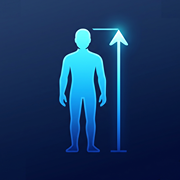

Last updated: August 3, 2026
This privacy policy applies to the mobile application “Height Predictor” provided by the developer.
Height Predictor does not require account registration and does not ask users to create an account.
The app allows users to enter information such as age, biological sex, current height, and their parents' reported heights in order to calculate an estimated adult height.
This information is processed locally on the user's device and is not transmitted to the developer.
The developer does not collect, store, or share users' height information or prediction results on external servers.
Height Predictor stores certain information locally on the user's device, including:
This information is used only to provide app functionality and is not accessible to the developer.
The app estimates adult height using the information entered by the user, including age, biological sex, current height, and parental heights.
Prediction results are generated locally on the device.
The developer does not receive, review, or store any prediction inputs or results.
Height Predictor offers an optional one-time in-app purchase that permanently unlocks the full prediction report.
Purchases are processed by Apple through the App Store.
The developer does not receive or store payment card information.
Purchase verification is handled using Apple's StoreKit services.
Height Predictor may display banner advertisements using Google AdMob for users who have not purchased the full version.
Third-party advertising services may collect certain information, including device identifiers, advertising identifiers, approximate location, diagnostic information, and advertisement interaction data according to their own privacy policies.
Banner advertisements are removed after purchasing the full version.
Height Predictor uses Google Firebase Analytics to understand general app usage and improve the application.
Analytics events may include anonymous information such as screen views, button taps, purchase events, device type, operating system version, and other diagnostic information.
No personally identifiable information or height prediction inputs are collected through Firebase Analytics.
Height Predictor uses the following third-party services:
These services process information according to their own privacy policies.
Height Predictor is provided for informational and educational purposes only.
The app does not provide medical advice, diagnosis, treatment, or professional healthcare recommendations.
The estimated adult height is only a prediction and should not be considered a guarantee of future height.
Actual adult height may differ due to genetics, nutrition, health, medical conditions, development, and many other factors.
Any locally stored app data remains on the user's device until it is removed by deleting the app or clearing the app's data.
The developer cannot recover locally stored data because it is never uploaded to external servers.
Height Predictor is not specifically directed toward children under the age of 13.
The app does not knowingly collect personal information from children.
If you believe that a child has provided personal information through the app, please contact the developer so that appropriate action can be taken.
This privacy policy may be updated from time to time.
Any significant changes may be communicated through the app, the App Store listing, or the developer's website.
If you have any questions about this privacy policy, please contact us: